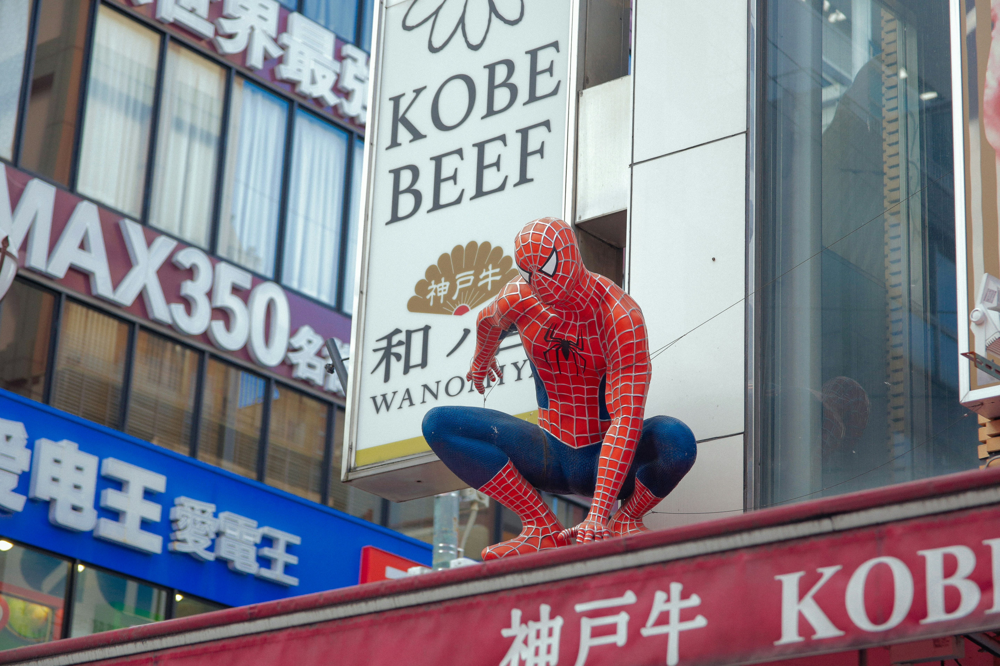
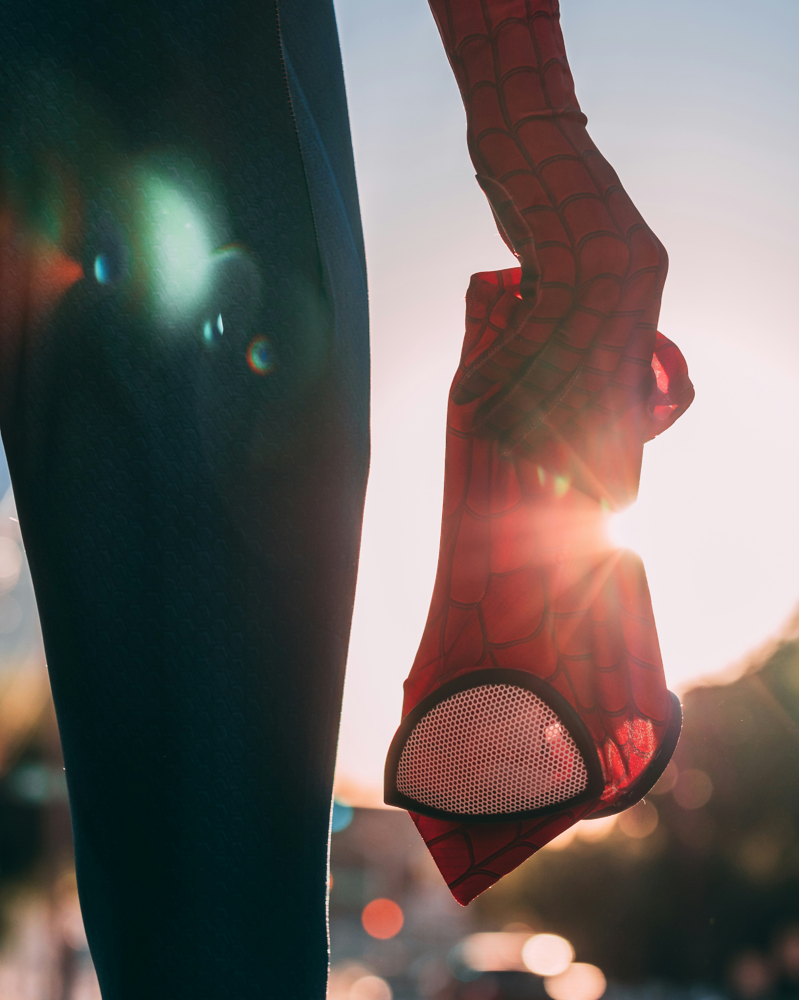
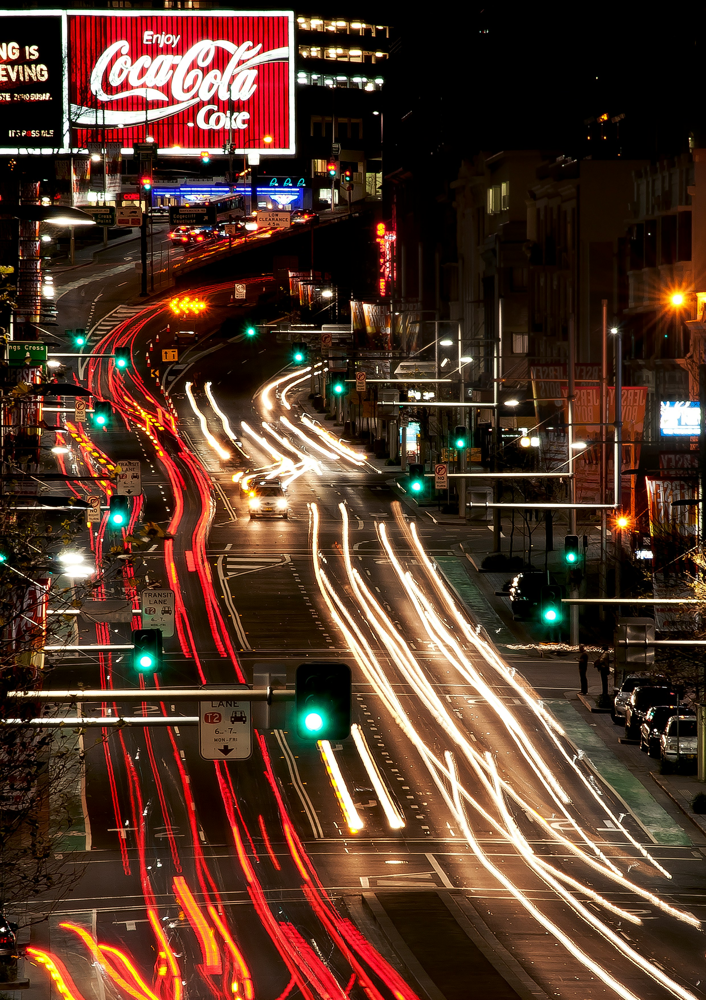

Galería

Publicidad

Publicidad

Contenido Principal
El Spider-Man interpretado por Tobey Maguire es uno de los favoritos porque se siente muy real y cercano a nosotros. Peter Parker es un joven tímido y algo distraído que tiene que lidiar con problemas comunes, como los estudios o el trabajo, mientras intenta proteger la ciudad. Lo que más lo distingue es que sus telarañas salen de su cuerpo de forma natural, y siempre nos enseñó que tener grandes poderes conlleva una responsabilidad enorme para ayudar a los demás.
Lo que ancló esta versión en el corazón del público fue la humanidad de sus vínculos. La química entre Peter, Mary Jane y Harry Osborn construyó un drama personal tan fuerte que las batallas contra el Duende Verde o el Doctor Octopus se sentían personales y urgentes. Al final, la trilogía de Maguire no se trataba solo de salvar al mundo, sino de las pequeñas victorias de un hombre que, a pesar de tenerlo todo en contra, nunca dejó de intentar ser una mejor persona para quienes lo rodeaban.
Por otro lado, el valor de esta versión reside en cómo humanizó a sus antagonistas, mostrándonos que el mal muchas veces nace de la tragedia o la ambición desmedida, y no solo de la maldad pura. Peter no solo derrotaba a sus enemigos con fuerza, sino que a menudo intentaba conectar con su humanidad, ofreciéndoles una oportunidad de redención que reflejaba su propia nobleza.
La batalla contra el Duende Verde fue solo el momento en que Peter Parker entendió el peso real de su máscara. A pesar de las tentaciones de Norman Osborn, Spider-Man eligió la compasión sobre el rencor, demostrando que su verdadera heroismo nace de su voluntad inquebrantable. Al salvar a Mary Jane y a los niños en el puente, Peter selló un pacto con la ciudad de Nueva York, aceptando que su destino era ser el guardián de los inocentes, sin importar los sacrificios personales que eso conlleva.
Vídeo
Peter Parker (Spiderman)
Es el corazón de la historia, un joven brillante pero socialmente torpe y con problemas económicos que vive bajo el lema "un gran poder conlleva una gran responsabilidad". A diferencia de otras versiones, este Peter genera su propia telaraña orgánica y su traje es un símbolo de esperanza para Nueva York. Es un héroe profundamente humano que constantemente debe sacrificar su propia felicidad y sus deseos personales para proteger a los demás, cargando siempre con la culpa de la muerte de su tío Ben.
Mary Jane Watson
Ella es mucho más que la chica de la que Peter está enamorado; es una mujer que lucha por cumplir sus sueños de ser actriz mientras intenta escapar de un entorno familiar abusivo. Se caracteriza por su cabellera pelirroja y su personalidad vibrante, aunque por dentro lidia con mucha inseguridad. A lo largo de las películas, su relación con Peter es un vaivén emocional, siendo ella el motor que motiva a Peter a seguir adelante, incluso cuando el peligro la pone constantemente en el centro de las batallas.
Norman Osborn (El duende verde)
Es el villano definitivo y una figura paterna retorcida para Peter. Como científico y dueño de Oscorp, su ambición lo lleva a probar en sí mismo un suero de super-soldado que fragmenta su mente, creando una doble personalidad sádica y burlona. Se distingue por su armadura verde metálica y su planeador de alta tecnología. Su rasgo más aterrador es cómo utiliza el terror psicológico para atacar a Peter donde más le duele: sus seres queridos, convirtiendo su rivalidad en algo sumamente personal.
Harry Osborn
Es el mejor amigo de Peter, pero vive atormentado por la necesidad de aprobación de su padre, Norman. Es un personaje trágico que pasa de ser un aliado leal a un enemigo consumido por el odio y la confusión tras la muerte de su padre, de la cual culpa a Spider-Man. Se caracteriza por su estatus de heredero rico y una lucha interna constante entre su moralidad y su deseo de venganza, lo que eventualmente lo lleva a heredar la tecnología del Duende para intentar destruir a su mejor amigo.